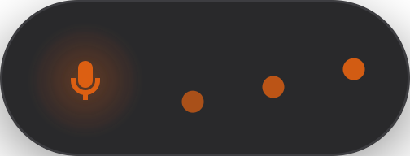
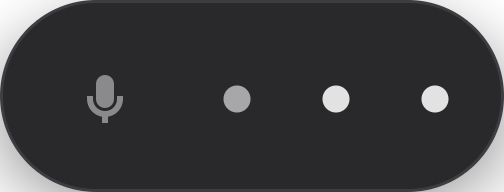

You press Super + J, you speak, and the text is typed straight where your cursor is — sentence after sentence, while you speak. No data leaves the machine.
The real overlay: a microphone, and an equalizer where each bar tracks a frequency band, from lows on the left to highs on the right.
Transcription runs on your GPU (or your CPU) with faster-whisper. No account, no API, no network — the model is loaded once, and it stays in memory.
Not a byte of audio leaves the computer. Cut the network: it still works.
The text lands in the focused application. Your clipboard is handed back untouched.
A short pause is enough: the sentence is transcribed and inserted while you dictate the next one.
Linux, WSL and macOS. The install script recognises the host and adapts every step.

While listening
While transcribing$ curl -LsSf https://raw.githubusercontent.com/SalvadorCardona/whisper-desk/main/install.sh | sh
The script recognises the host — Linux, WSL or macOS — and adapts every step:
apt or brew as appropriate;whisper-desk command in ~/.local/bin;The Whisper model (a few hundred MB) is downloaded the first time the service starts.
Running the same command again updates the installation: the code is replaced, the service restarted, and your configuration and models are kept.
$ whisper-desk doctor
| Linux | WSL | macOS | |
|---|---|---|---|
| Microphone capture | arecord (ALSA) | parec (WSLg) | rec (sox) or ffmpeg |
| Clipboard | wl-copy / xclip | clip.exe | pbcopy |
| Paste keystroke | /dev/uinput | SendKeys (PowerShell) | System Events |
| Global shortcut | GNOME (gsettings) | Start menu | skhd, or by hand |
| Service | systemd | systemd, otherwise on demand | launchd |
| Notifications | notify-send | notify-send (WSLg) | osascript |
None of these choices are set in stone: backend, keyboard and paste_shortcut can be forced in the configuration.
systemd in the user session.An NVIDIA GPU is a bonus, not a requirement; on macOS transcription runs on the CPU, since CTranslate2 does not use Metal.
$ curl -LsSf https://raw.githubusercontent.com/SalvadorCardona/whisper-desk/main/uninstall.sh | sh
Add WD_PURGE=1 to remove the configuration and the history as well. Downloaded models stay in ~/.cache/huggingface.
| Gesture | Effect |
|---|---|
| Super + J | starts listening — the overlay appears |
| a short pause (~0.6 s) | the sentence is transcribed and inserted at the cursor, listening continues |
| 2 s of silence | end of dictation |
| Super + J (again) | stops listening immediately |
The default shortcut follows the host: Super + J on Linux and macOS (Cmd + J), Ctrl + Alt + J on WSL — Windows reserves the Windows key for itself.
$ whisper-desk record # dictate and write the text to standard output $ whisper-desk toggle # same as the keyboard shortcut $ whisper-desk status # daemon state, loaded model, GPU or CPU $ whisper-desk doctor # full diagnostic $ whisper-desk config # open the configuration in $EDITOR $ whisper-desk reload # reload the configuration without restarting $ whisper-desk quit # stop the daemon
~/.config/whisper-desk/config.toml
[hotkey] binding = "auto" # "auto", or <Ctrl>/<Alt>/<Shift>/<Super> + a key [model] name = "auto" # auto | tiny | base | small | medium | large-v3 | large-v3-turbo device = "auto" # auto | cuda | cpu language = "fr" # ISO code, or "auto" for detection initial_prompt = "" # vocabulary to favour (proper nouns, jargon) [recording] backend = "auto" # auto | arecord | parec | rec | sox | ffmpeg streaming = true # insertion as you go, sentence by sentence segment_silence_seconds = 0.6 # pause that splits a sentence silence_seconds = 2.0 # silence that ends the dictation max_seconds = 120 [output] mode = "cursor" # cursor | clipboard | stdout — combinable: "cursor+stdout" paste_shortcut = "auto" # "shift+insert" if you mostly dictate in a terminal keyboard = "auto" # auto | uinput | windows | applescript | none restore_clipboard = true # hands your original clipboard back at the end notify = false history = true # log in ~/.local/state/whisper-desk/history.log [overlay] enabled = true accent = "#e46212" position = "bottom-center" # bottom-center | top-center | center margin = 96
After a change:
$ whisper-desk reload # for everything but the shortcut $ whisper-desk hotkey install # to apply a new shortcut
| Model | VRAM | Speed | Quality |
|---|---|---|---|
small | ~1 GB | very fast | decent — default without a GPU |
medium | ~2.5 GB | fast | good |
large-v3-turbo | ~2 GB | fast | excellent — default with a GPU |
large-v3 | ~4.5 GB | slower | the best |
To shorten the delay between the end of a sentence and its insertion even further, lower beam_size to 1 in [model].
Super + J ─→ whisper-desk toggle ─→ Unix socket ─→ daemon (model in memory) │ X11 overlay ←── audio level ─────┤ │ mic capture ─→ silence detection ─→ sentence ─→ faster-whisper ─→ text │ clipboard + Ctrl+V (simulated keystroke) ─→ cursor
The daemon keeps the model loaded at all times, and transcribes one sentence while the microphone is already recording the next. Only the two ends of that chain — capture and keystroke — change from one host to another; the rest is shared.
The virtual-keyboard protocol (the one wtype uses) is not
implemented by GNOME. So we go through a kernel virtual keyboard (/dev/uinput,
reachable without privileges thanks to the ACL set by systemd) that sends a plain paste shortcut.
On an AZERTY keyboard, accents and half the letters would land on the wrong key; the paste shortcut, on the other hand, sits on the same physical key everywhere. The text therefore travels through the clipboard, which is restored afterwards.
A Wayland overlay would catch the paste instead of your application. The overlay is therefore
an X11 client (via Xwayland) of type NOTIFICATION: never focused, and positionable.
The two other hosts follow the same idea with their own tools: on WSL, the keystroke goes to
Windows through SendKeys (a Linux virtual keyboard would only reach WSLg windows);
on macOS, it goes through System Events, which is what earns the program the accessibility
permission prompt.
| File | Role |
|---|---|
daemon.py | service, Unix socket, listening and transcription in parallel |
host.py | host detection, PowerShell bridge on WSL |
capture.py | choice of capture tool (arecord, parec, rec, ffmpeg) |
recorder.py | silence detection, splitting into sentences |
transcriber.py | faster-whisper, GPU/CPU selection |
inject.py | simulated keystroke: uinput, SendKeys, System Events |
output.py | insertion at the cursor, clipboard, notifications |
overlay.py | X11 overlay (separate process) |
hotkey.py | global shortcut: GNOME, Start menu, skhd |
service.py | daemon startup: systemd, launchd or direct |
$ git clone https://github.com/SalvadorCardona/whisper-desk $ cd whisper-desk $ WD_SRC="$PWD" sh install.sh # installs from the local clone, without network access
The test suite depends on the standard library alone — no virtual environment, no model to
download. The WD_HOST variable (linux, wsl,
macos) forces the detection, which makes it possible to test all three hosts from any of them.
$ python3 -m unittest discover -s tests -t .
whisper-desk doctor names the detected host, then checks one by one the pieces it
uses: it is the first thing to try for everything below.
$ whisper-desk status # is the daemon answering? $ whisper-desk hotkey show # is the shortcut registered? $ journalctl --user -u whisper-desk -f # the logs (systemd) $ tail -f ~/.local/state/whisper-desk/daemon.log # the logs (launchd)
The simulated keystroke did not get through. whisper-desk doctor says which one is at fault:
/dev/uinput must be writable. In a local session, systemd grants you access automatically; over SSH or in a remote session, it does not.whisper-desk) in System Settings → Privacy & Security → Accessibility, then restart the daemon.powershell.exe must be reachable from WSL, and the target window must be a Windows window in the foreground.^VCtrl + V is not paste there. Set paste_shortcut = "shift+insert" in [output], then run whisper-desk reload.
Nine times out of ten, the default microphone is the wrong one — an empty jack socket often
stays the default source, and returns nothing but silence. whisper-desk doctor
measures the level actually captured:
$ whisper-desk doctor # "the microphone picks up sound" must be ticked $ wpctl status # lists the sources; spot the real microphone $ wpctl set-default <id> # switch to it
Adjust segment_silence_seconds (the splitting) and silence_seconds (the end of dictation) in [recording].
whisper-desk status reports the selected device, and
journalctl --user -u whisper-desk the reason for the fallback — often missing
CUDA libraries, or not enough VRAM.
The cases specific to WSL and macOS (no sound captured, the shortcut without skhd,
microphone gain…) are detailed in the
repository README.